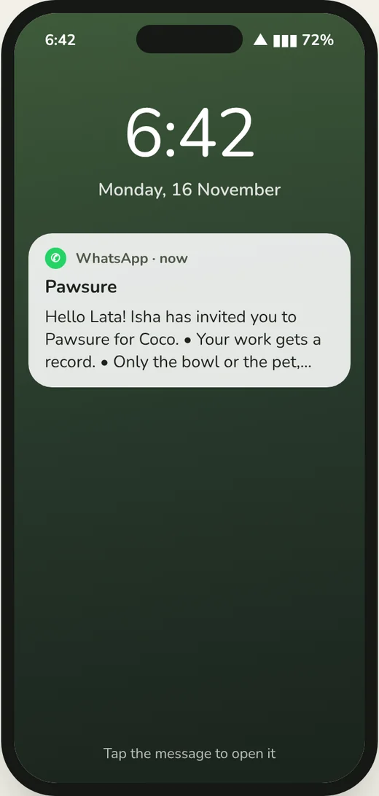
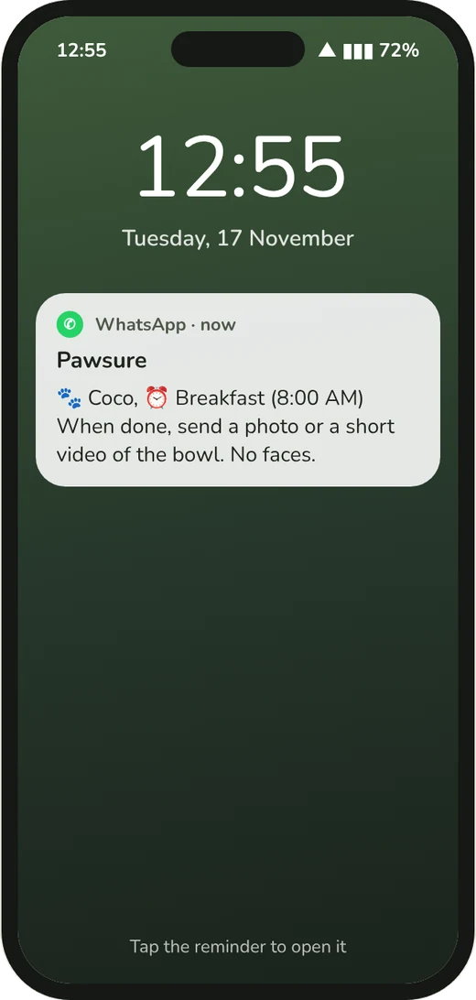
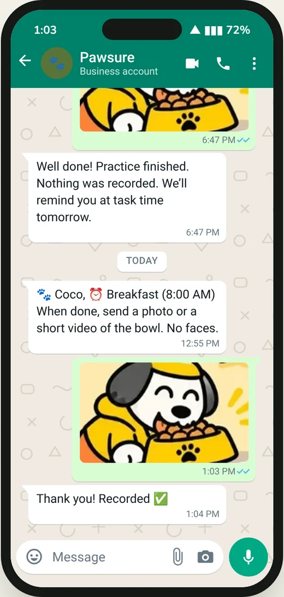
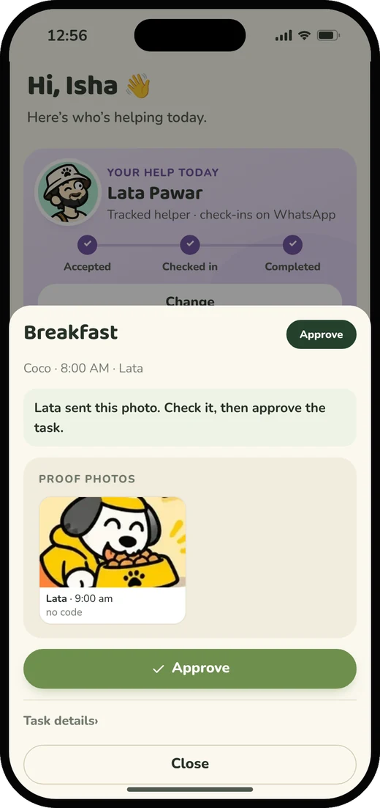
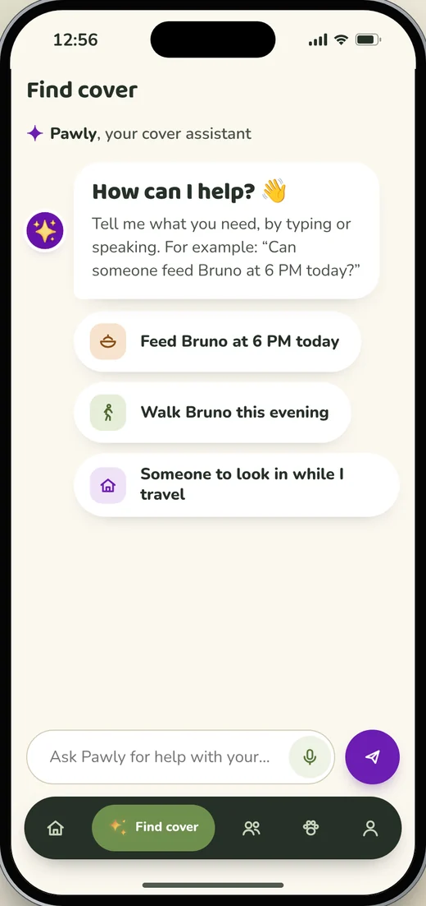
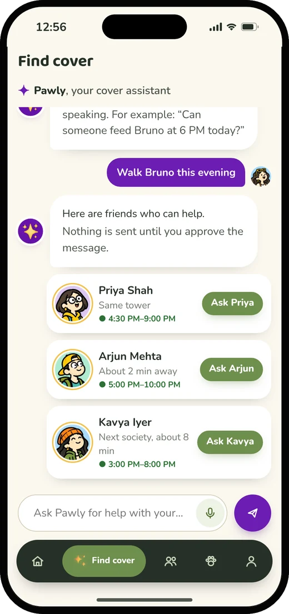
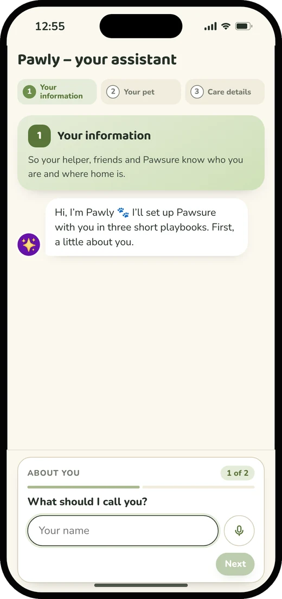
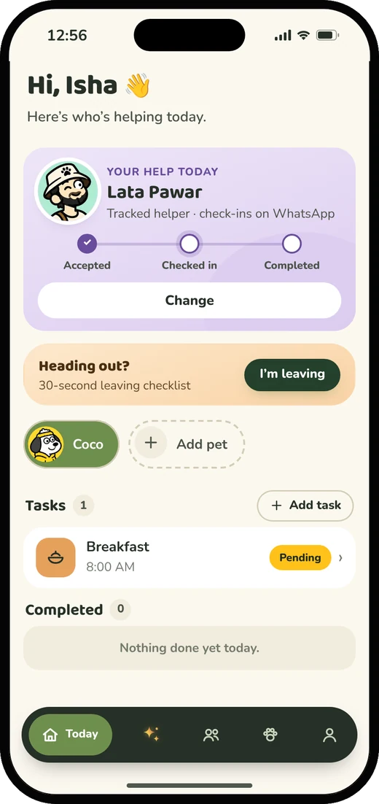
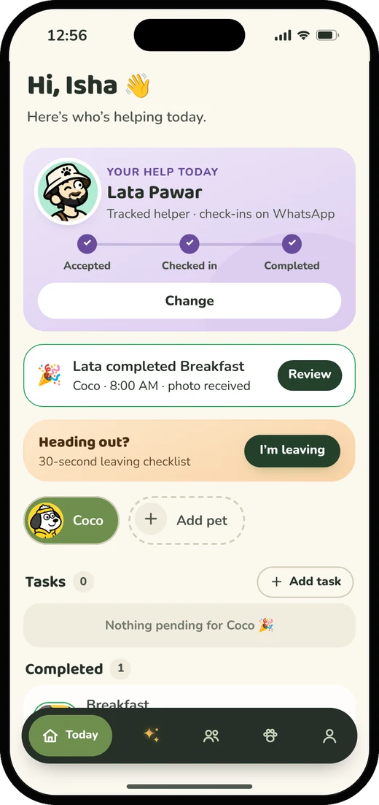
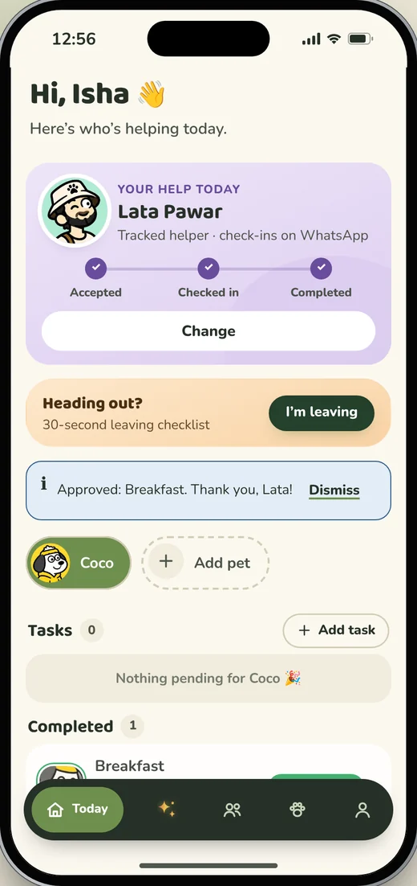

<title>The 1:07 PM Problem</title>
<meta name="claude:viewport-fit-sides" content="cover">
<meta name="description" content="A product case study of Pawsure: how we designed proof of pet care at home, for owners who are away and the helpers who never wanted another app.">
<link rel="preconnect" href="https://fonts.googleapis.com">
<link rel="stylesheet" href="https://fonts.googleapis.com/css2?family=Baloo+2:wght@600;700;800&family=Inter:wght@400;500;600;700&family=JetBrains+Mono:wght@500;600&display=swap">
<style>
/* Layout: a single reading column (~66ch) that widens into full-bleed bands for the evidence: chats, numbers, screens.
   The page borrows its one signature from the product's world: WhatsApp timestamps and message bubbles. */
:root{
  --paper:#F2F4EC;        /* sage-tinted paper */
  --sheet:#FFFFFF;
  --ink:#1D2620;          /* deep green-black */
  --ink-2:#56614F;
  --line:#D9DECF;
  --sage:#587539;         /* Pawsure green */
  --sage-soft:#E3EAD6;
  --honey:#E3B23C;        /* the "Likely" colour */
  --rust:#B8612A;         /* something went wrong */
  --wa:#DCF8C6;           /* an outgoing WhatsApp bubble */
  --wa-in:#FFFFFF;
  --chat:#ECE5DA;
  --violet:#6E46C2;       /* Pawly */
  --f-display:'Baloo 2',ui-rounded,'Trebuchet MS',system-ui,sans-serif;
  --f-body:Inter,system-ui,-apple-system,'Segoe UI',sans-serif;
  --f-mono:'JetBrains Mono',ui-monospace,Menlo,Consolas,monospace;
  --measure:66ch;
}
@media (prefers-color-scheme:dark){:root:not([data-theme="light"]){
  --paper:#141A15;--sheet:#1C241D;--ink:#E9EEE3;--ink-2:#A6B19C;--line:#2F3A30;--sage:#9DBF73;--sage-soft:#243020;
  --honey:#E8C25A;--rust:#E08A55;--wa:#1F4A2E;--wa-in:#222C24;--chat:#0F1511;--violet:#B79BF0;color-scheme:dark}}
:root[data-theme="dark"]{
  --paper:#141A15;--sheet:#1C241D;--ink:#E9EEE3;--ink-2:#A6B19C;--line:#2F3A30;--sage:#9DBF73;--sage-soft:#243020;
  --honey:#E8C25A;--rust:#E08A55;--wa:#1F4A2E;--wa-in:#222C24;--chat:#0F1511;--violet:#B79BF0;color-scheme:dark}

*{box-sizing:border-box}
body{background:var(--paper);color:var(--ink);font:400 1.0625rem/1.7 var(--f-body);-webkit-font-smoothing:antialiased;margin:0}
.wrap{padding-left:max(16px,env(safe-area-inset-left,0px));padding-right:max(16px,env(safe-area-inset-right,0px))}
.col{max-width:var(--measure);margin-inline:auto}
.wide{max-width:1120px;margin-inline:auto}
h1,h2,h3{font-family:var(--f-display);line-height:1.05;letter-spacing:-.01em;text-wrap:balance;margin:0}
h2{font-size:clamp(2rem,4.6vw,3rem);font-weight:800}
h3{font-size:1.45rem;font-weight:700;line-height:1.2}
p{margin:0}
a{color:var(--sage);text-underline-offset:3px}
a:focus-visible,button:focus-visible{outline:3px solid var(--sage);outline-offset:3px;border-radius:6px}
.eyebrow{font:600 .78rem/1 var(--f-mono);letter-spacing:.14em;text-transform:uppercase;color:var(--sage)}
.lede{font-size:1.25rem;line-height:1.6;color:var(--ink-2)}
.stack{display:grid;gap:1.15rem}
section{padding-block:clamp(56px,9vw,104px)}
section + section{border-top:1px solid var(--line)}
.mono{font-family:var(--f-mono);font-variant-numeric:tabular-nums}
figure{margin:0}
figcaption{font-size:.85rem;color:var(--ink-2);margin-top:.6rem}

/* ---------- hero ---------- */
.hero{padding-block:clamp(40px,7vw,88px) clamp(48px,8vw,96px)}
.hero-grid{display:grid;grid-template-columns:minmax(0,1.15fr) minmax(0,.85fr);gap:clamp(28px,5vw,72px);align-items:center}
.brand{display:flex;align-items:center;gap:12px;margin-bottom:clamp(28px,5vw,56px)}
.brand img{height:34px;width:auto}
.brand span{font:600 .78rem/1 var(--f-mono);letter-spacing:.12em;text-transform:uppercase;color:var(--ink-2)}
.clock{font:600 clamp(4.2rem,13vw,9.5rem)/.9 var(--f-mono);letter-spacing:-.05em;color:var(--ink);font-variant-numeric:tabular-nums}
.clock small{font-size:.32em;letter-spacing:0;margin-left:.15em;color:var(--sage)}
.hero h1{font-size:clamp(2.2rem,5.4vw,3.9rem);font-weight:800;margin-top:.35em}
.hero .lede{margin-top:1.1rem;max-width:34ch}
.meta{display:flex;flex-wrap:wrap;gap:10px 28px;margin-top:2rem;font-size:.9rem;color:var(--ink-2)}
.meta b{display:block;font:600 .7rem/1 var(--f-mono);letter-spacing:.12em;text-transform:uppercase;color:var(--ink);margin-bottom:6px}

/* the phone-like chat that carries the hero's story */
.chat{background:var(--chat);border-radius:28px;padding:18px 16px 20px;display:grid;gap:10px;max-width:400px;justify-self:end;width:100%;
  box-shadow:0 30px 60px -36px rgba(29,38,32,.55)}
.chat-head{display:flex;align-items:center;gap:10px;padding:2px 4px 8px;border-bottom:1px solid color-mix(in srgb,var(--ink) 10%,transparent)}
.chat-head img{width:34px;height:34px;border-radius:50%;background:#F2C14E}
.chat-head b{font:700 .95rem/1.1 var(--f-body)}.chat-head span{display:block;font-size:.72rem;color:var(--ink-2)}
.bub{max-width:86%;padding:8px 12px 6px;border-radius:12px;font-size:.93rem;line-height:1.45;background:var(--wa-in);box-shadow:0 1px 0 rgba(0,0,0,.06)}
.bub.out{justify-self:end;background:var(--wa);border-top-right-radius:4px}
.bub.in{border-top-left-radius:4px}
.bub time{display:block;text-align:right;font:500 .68rem/1 var(--f-mono);color:var(--ink-2);margin-top:4px}
.bub.typing{color:var(--ink-2);font-style:italic}
.ticks{color:#53BDEB;margin-left:4px}

/* ---------- numbers ---------- */
.stats{display:grid;grid-template-columns:repeat(3,minmax(0,1fr));gap:1px;background:var(--line);border:1px solid var(--line);border-radius:20px;overflow:hidden;margin-top:2.5rem}
.stat{background:var(--sheet);padding:24px 22px;display:grid;gap:10px;align-content:start}
.stat b{font:800 clamp(2.6rem,6vw,3.6rem)/.95 var(--f-display);letter-spacing:-.02em}
.stat b.warn{color:var(--rust)}
.stat p{font-size:.95rem;color:var(--ink-2);line-height:1.45}
.dots{display:grid;grid-template-columns:repeat(15,1fr);gap:4px;max-width:240px}
.dots i{aspect-ratio:1;border-radius:50%;background:var(--line)}
.dots i.on{background:var(--sage)}
.dots.warn i.on{background:var(--rust)}
.note{font-size:.82rem;color:var(--ink-2);margin-top:1rem}

/* ---------- pull quote ---------- */
.pull{font:700 clamp(1.7rem,3.6vw,2.5rem)/1.2 var(--f-display);text-wrap:balance;border-left:4px solid var(--sage);padding:.2em 0 .2em 1rem}
.pull span{color:var(--sage)}

/* ---------- personas ---------- */
.people{display:grid;grid-template-columns:repeat(2,minmax(0,1fr));gap:22px;margin-top:2.4rem}
.person{background:var(--sheet);border:1px solid var(--line);border-radius:22px;padding:24px;display:grid;gap:14px;align-content:start}
.person header{display:flex;align-items:center;gap:14px}
.person header img{width:64px;height:64px;border-radius:50%;background:#E8DDF6}
.person h3{font-size:1.35rem}
.person header span{display:block;font:600 .7rem/1.2 var(--f-mono);letter-spacing:.1em;text-transform:uppercase;color:var(--ink-2);margin-top:4px}
.person q{font:700 1.15rem/1.3 var(--f-display);color:var(--ink);quotes:"“" "”"}
.person dl{margin:0;display:grid;gap:10px}
.person dt{font:600 .68rem/1 var(--f-mono);letter-spacing:.12em;text-transform:uppercase;color:var(--sage)}
.person dd{margin:4px 0 0;font-size:.95rem;line-height:1.5}

/* ---------- landscape table ---------- */
.scroll{overflow-x:auto;margin-top:2rem;border:1px solid var(--line);border-radius:18px;background:var(--sheet)}
table{border-collapse:collapse;width:100%;min-width:640px;font-size:.92rem}
th,td{padding:12px 14px;text-align:center;border-top:1px solid var(--line)}
thead th{border-top:0;font:600 .68rem/1.2 var(--f-mono);letter-spacing:.1em;text-transform:uppercase;color:var(--ink-2)}
td:first-child,th:first-child{text-align:left}
td small{display:block;color:var(--ink-2);font-size:.78rem}
.y,.n{display:inline-grid;place-items:center;width:26px;height:26px;border-radius:50%;font-size:.8rem;font-weight:800}
.y{background:var(--sage);color:var(--sheet)}.n{background:var(--paper);color:var(--ink-2)}
tr.us td{background:var(--sage-soft);font-weight:600}

/* ---------- bets ---------- */
.bet{display:grid;grid-template-columns:minmax(0,1fr) minmax(0,1fr);gap:clamp(24px,5vw,64px);align-items:center;padding-block:clamp(36px,6vw,64px)}
.bet + .bet{border-top:1px dashed var(--line)}
.bet.flip .bet-art{order:-1}
.bet .tag{font:600 .72rem/1 var(--f-mono);letter-spacing:.12em;text-transform:uppercase;color:var(--ink-2)}
.bet h3{font-size:clamp(1.6rem,3vw,2.1rem);margin-top:.5rem}
.bet .stack{gap:.9rem}
.tradeoff{font-size:.92rem;background:var(--sheet);border:1px solid var(--line);border-radius:14px;padding:12px 14px}
.tradeoff b{font:600 .68rem/1 var(--f-mono);letter-spacing:.12em;text-transform:uppercase;color:var(--rust);display:block;margin-bottom:6px}
.bet-art{display:flex;gap:14px;justify-content:center;flex-wrap:wrap}
.shot{width:min(240px,44%);border-radius:28px;border:6px solid #111;background:#111;box-shadow:0 24px 50px -30px rgba(0,0,0,.6);display:block;height:auto}
.states{display:grid;gap:10px;width:100%;max-width:420px}
.state{display:grid;grid-template-columns:14px minmax(0,1fr);gap:12px;align-items:start;background:var(--sheet);border:1px solid var(--line);border-radius:14px;padding:14px 16px}
.state i{width:14px;height:14px;border-radius:50%;margin-top:6px}
.state b{font-weight:700}.state span{display:block;font-size:.88rem;color:var(--ink-2)}

/* ---------- the cut list ---------- */
.cuts{display:grid;grid-template-columns:repeat(2,minmax(0,1fr));gap:12px 28px;margin-top:2rem;list-style:none;padding:0}
.cuts li{display:grid;gap:4px;padding:14px 0;border-top:1px solid var(--line)}
.cuts s{font:700 1.2rem/1.2 var(--f-display);text-decoration-thickness:2px;text-decoration-color:var(--rust);color:var(--ink-2)}
.cuts span{font-size:.9rem;color:var(--ink-2)}
.ratio{display:flex;align-items:baseline;gap:16px;flex-wrap:wrap;margin-top:2.2rem}
.ratio b{font:800 clamp(3rem,8vw,5rem)/.9 var(--f-display);letter-spacing:-.02em}
.ratio span{max-width:44ch;color:var(--ink-2)}

/* ---------- walkthrough ---------- */
.flow{display:grid;grid-template-columns:repeat(5,minmax(0,1fr));gap:18px;margin-top:2.4rem}
.flow figure{display:grid;gap:10px;align-content:start}
.flow .shot{width:100%;border-width:5px;border-radius:24px}
.flow figcaption{margin:0;font-size:.86rem;line-height:1.45}
.flow figcaption b{display:block;font:600 .68rem/1 var(--f-mono);letter-spacing:.12em;color:var(--sage);margin-bottom:4px}

/* ---------- GTM ---------- */
.plays{display:grid;grid-template-columns:repeat(2,minmax(0,1fr));gap:18px;margin-top:2.2rem}
.play{background:var(--sheet);border:1px solid var(--line);border-radius:20px;padding:22px;display:grid;gap:8px;align-content:start}
.play h3{font-size:1.3rem}
.play p{font-size:.96rem;color:var(--ink-2)}
.net{display:block;width:100%;max-width:420px;height:auto;margin-inline:auto}

/* ---------- metrics ---------- */
.targets{display:grid;grid-template-columns:repeat(3,minmax(0,1fr));gap:14px;margin-top:2rem}
.target{border-top:3px solid var(--sage);padding-top:12px;display:grid;gap:6px}
.target b{font:800 2.2rem/1 var(--f-display)}
.target span{font-size:.9rem;color:var(--ink-2);line-height:1.45}

/* ---------- lessons ---------- */
.lessons{display:grid;gap:18px;margin-top:2rem;counter-reset:l}
.lessons div{display:grid;grid-template-columns:auto minmax(0,1fr);gap:16px;align-items:start}
.lessons div::before{counter-increment:l;content:counter(l);font:800 1.4rem/1 var(--f-display);color:var(--sheet);background:var(--sage);width:40px;height:40px;border-radius:50%;display:grid;place-items:center}
.lessons p{font-size:1rem}.lessons b{display:block;font-family:var(--f-display);font-size:1.2rem;line-height:1.25;margin-bottom:4px}

.cta{display:flex;flex-wrap:wrap;gap:12px;margin-top:1.8rem}
.btn{display:inline-flex;align-items:center;gap:8px;padding:12px 20px;border-radius:999px;font-weight:700;text-decoration:none;border:2px solid var(--sage)}
.btn.primary{background:var(--sage);color:var(--sheet)}
.btn.ghost{color:var(--sage)}
footer{padding-block:48px 64px;border-top:1px solid var(--line);font-size:.9rem;color:var(--ink-2)}
footer .row{display:flex;flex-wrap:wrap;gap:14px 40px;justify-content:space-between}

@media (max-width:860px){
  .hero-grid,.bet,.people,.plays{grid-template-columns:minmax(0,1fr)}
  .chat{justify-self:start}
  .bet.flip .bet-art{order:0}
  .flow{grid-template-columns:repeat(2,minmax(0,1fr))}
  .targets{grid-template-columns:repeat(2,minmax(0,1fr))}
}
@media (max-width:560px){
  .stats{grid-template-columns:minmax(0,1fr)}
  .cuts{grid-template-columns:minmax(0,1fr)}
  .targets{grid-template-columns:minmax(0,1fr)}
}
@media (prefers-reduced-motion:no-preference){
  .chat .bub{animation:pop .5s cubic-bezier(.2,.9,.3,1) both}
  .chat .bub:nth-child(3){animation-delay:.15s}.chat .bub:nth-child(4){animation-delay:.3s}.chat .bub:nth-child(5){animation-delay:.45s}.chat .bub:nth-child(6){animation-delay:.6s}
  @keyframes pop{from{transform:translateY(6px) scale(.98)}to{transform:none}}
}
</style>

<header class="hero wrap">
  <div class="wide">
    <div class="brand"><span>Product case study</span></div>
    <div class="hero-grid">
      <div>
        <div class="clock" aria-label="1:07 PM">1:07<small>PM</small></div>
        <h1>Do you know if your dog has eaten?</h1>
        <p class="lede">In our survey, 62% of pet parents rely on someone else to check on their pet, and 16% came home to find something wrong. This is how we designed Pawsure, a way to know whether planned care actually happened, built around a helper who never wanted another app.</p>
        <div class="meta">
          <div><b>Team</b>Group-G, IITR</div>
          <div><b>Scope</b>Research, product, design, working demo</div>
          <div><b>Platform</b>Mobile app + WhatsApp</div>
          <div><b>Pilot</b>Mumbai, Andheri–Powai</div>
        </div>
      </div>
      <div class="chat" aria-label="An example WhatsApp exchange">
        <div class="chat-head"><div><b>Sunita (helper)</b><span>last seen today at 12:41 PM</span></div></div>
        <div class="bub out">Did Bruno eat? 🙏<time class="mono">1:07 PM<span class="ticks">✓✓</span></time></div>
        <div class="bub out">And water bowl?<time class="mono">1:19 PM<span class="ticks">✓✓</span></time></div>
        <div class="bub out">Sunita??<time class="mono">1:42 PM<span class="ticks">✓</span></time></div>
        <div class="bub in">haan didi sab done 👍<time class="mono">2:58 PM</time></div>
        <div class="bub out typing">“All done.” Done when? Done what?<time class="mono">2:59 PM</time></div>
      </div>
    </div>
  </div>
</header>

<main>
<section class="wrap" id="problem">
  <div class="col stack">
    <span class="eyebrow">The problem</span>
    <h2>Care at home is a guess</h2>
    <p>Neha works 8 to 10 hours a day. Her helper, Sunita, comes in at lunch to feed Bruno, refill his water and take him down for a short walk. Most days it all happens. Some days it doesn’t, and Neha finds out at 7 PM, from an empty bowl.</p>
    <p>Nothing in that arrangement is broken, exactly. There is a plan, but it lives in Neha’s head and in a dozen old WhatsApp messages. There is a helper, but no signal when she misses a visit. And there is no backup when she can’t come, because nobody planned for that day.</p>
    <p class="pull">Three gaps, every working day: <span>no shared plan, no signal, no backup.</span></p>
  </div>
</section>

<section class="wrap" id="research">
  <div class="wide">
    <div class="col stack">
      <span class="eyebrow">What 45 pet parents told us</span>
      <h2>Everyone is improvising</h2>
      <p>We started with a survey and interviews with pet parents, mostly working professionals in Mumbai. The sample is small and exploratory, but the pattern was hard to miss: people were already building their own monitoring systems out of phone calls, cameras and favours.</p>
    </div>
    <div class="stats">
      <div class="stat"><b>80%</b><div class="dots" aria-hidden="true"></div><p>leave their pet alone at least sometimes (36 of 45)</p></div>
      <div class="stat"><b>69%</b><div class="dots" aria-hidden="true"></div><p>have changed their plans because of their pet (31 of 45)</p></div>
      <div class="stat"><b>62%</b><div class="dots" aria-hidden="true"></div><p>rely on someone else to check on their pet (28 of 45)</p></div>
      <div class="stat"><b>42%</b><div class="dots" aria-hidden="true"></div><p>use a pet camera (19 of 45). It can watch. It can’t refill a bowl.</p></div>
      <div class="stat"><b>40%</b><div class="dots" aria-hidden="true"></div><p>have paid for pet care (18 of 45)</p></div>
      <div class="stat"><b class="warn">16%</b><div class="dots warn" aria-hidden="true"></div><p>came home to find something wrong (7 of 45)</p></div>
    </div>
    <p class="note col">Primary research and survey, n = 45, exploratory. Each dot is one respondent.</p>
  </div>
</section>

<section class="wrap" id="helper">
  <div class="wide">
    <div class="col stack">
      <span class="eyebrow">The person we almost designed out</span>
      <h2>The helper is a user too</h2>
      <p>Our first sketches were owner apps: dashboards, alerts, a live status. Then we spent time with the people actually doing the care. Sunita works across three flats. She uses WhatsApp and voice notes, in Hindi or Marathi, sometimes on a basic phone. She has no interest in installing anything, and a very reasonable fear of being blamed for honest mistakes.</p>
      <p>That changed the brief. If proof of care needed Sunita to adopt an app, Pawsure would fail on day one. So the product had to work for two people with opposite worries.</p>
    </div>
    <div class="people">
      <article class="person">
        <header><div><h3>Neha, 34</h3><span>Owner · out 8–10 hours</span></div></header>
        <q>Is Bruno okay?</q>
        <dl><div><dt>Pain</dt><dd>Can’t tell if lunch, water and the walk actually happened.</dd></div><div><dt>Needs</dt><dd>One honest status for the day, and alerts only when something slips.</dd></div></dl>
      </article>
      <article class="person">
        <header><div><h3>Sunita, 45</h3><span>Helper · three flats</span></div></header>
        <q>Will I be blamed?</q>
        <dl><div><dt>Pain</dt><dd>Apps, typing, being watched, and blame for honest mistakes.</dd></div><div><dt>Needs</dt><dd>A simple request in her language, no app, fair credit, and the right to stop any time.</dd></div></dl>
      </article>
    </div>
  </div>
</section>

<section class="wrap" id="market">
  <div class="wide">
    <div class="col stack">
      <span class="eyebrow">The landscape</span>
      <h2>Everyone solves a slice</h2>
      <p>Pet care apps help you book someone. Cameras help you watch. Friends help, informally, until they can’t. None of them answer Neha’s actual question, which is whether the care she planned happened today.</p>
    </div>
    <div class="scroll">
      <table>
        <thead><tr><th>Option</th><th>Book care</th><th>Watch</th><th>Proof care happened</th><th>Backup if plans fail</th></tr></thead>
        <tbody>
          <tr><td>Care marketplaces<small>PetBacker, ThePetNest</small></td><td><span class="y">✓</span></td><td><span class="n">✕</span></td><td><span class="n">✕</span></td><td><span class="n">✕</span></td></tr>
          <tr><td>Sitting and boarding<small>Rover, Wag!, TrustedHousesitters, PawSpace</small></td><td><span class="y">✓</span></td><td><span class="n">✕</span></td><td><span class="n">✕</span></td><td><span class="n">✕</span></td></tr>
          <tr><td>Pet cameras<small>Furbo, Petcube</small></td><td><span class="n">✕</span></td><td><span class="y">✓</span></td><td><span class="n">✕</span></td><td><span class="n">✕</span></td></tr>
          <tr><td>Friends and helpers<small>Informal care</small></td><td><span class="n">✕</span></td><td><span class="n">✕</span></td><td><span class="n">✕</span></td><td><span class="n">✕</span></td></tr>
          <tr class="us"><td>Pawsure<small>Your own helper, assured</small></td><td>–</td><td>–</td><td><span class="y">✓</span></td><td><span class="y">✓</span></td></tr>
        </tbody>
      </table>
    </div>
    <p class="pull col" style="margin-top:2.4rem">Others help you book care. <span>Pawsure assures it happened,</span> and has a backup when it doesn’t.</p>
  </div>
</section>

<section class="wrap" id="bets">
  <div class="wide">
    <div class="col stack">
      <span class="eyebrow">Five design bets</span>
      <h2>Small decisions that carry the product</h2>
      <p>Each of these could have gone the other way. Here is what we chose, and what it cost.</p>
    </div>

    <div class="bet">
      <div class="stack">
        <span class="tag">Bet · WhatsApp, not an app</span>
        <h3>The helper never installs anything</h3>
        <p>The owner invites the helper from sign-up. Sunita gets a WhatsApp message in her language, sends a photo of her ID, and joins with one tap. From then on, Pawsure reminds her when each task is due, right where she already talks to everyone. Basic phones check in with a free missed call.</p>
        <p class="tradeoff"><b>What it cost</b>Less control. We design inside someone else’s chat, with templates and buttons instead of a custom interface.</p>
      </div>
      <div class="bet-art"></div>
    </div>

    <div class="bet flip">
      <div class="stack">
        <span class="tag">Bet · “Likely” is a feature</span>
        <h3>Honest confidence beats a fake “all done”</h3>
        <p>A phone call proves someone came. It doesn’t prove Bruno was fed. So Pawsure records the visit and each task separately, and shows how sure it is. One task signal is <em>Likely</em>. Two independent signals are <em>Confirmed</em>. Nothing is ever marked “failed”: no evidence is <em>Not confirmed</em>, and the owner decides what to do.</p>
        <p class="tradeoff"><b>What it cost</b>A more complicated status than a green tick. Owners have to learn three words instead of one.</p>
      </div>
      <div class="bet-art"><div class="states">
        <div class="state"><i style="background:var(--sage)"></i><div><b>Confirmed</b><span>Two independent signals, like a photo with the day’s code plus arrival and exit calls.</span></div></div>
        <div class="state"><i style="background:var(--honey)"></i><div><b>Likely</b><span>One task signal: a photo, a voice note naming the task, or a code after the prompt.</span></div></div>
        <div class="state"><i style="background:var(--line)"></i><div><b>Not confirmed</b><span>Nothing, or contradictory evidence. Never called a failure.</span></div></div>
      </div></div>
    </div>

    <div class="bet">
      <div class="stack">
        <span class="tag">Bet · The bowl, never the face</span>
        <h3>Proof of the task, not surveillance of the person</h3>
        <p>Sunita sends a photo of the bowl, or a short video. Never a selfie. The photo lands on the task in the owner’s Home, which changes from <span class="mono">Pending</span> to <span class="mono">Approve</span>. The owner opens it, sees the same photo, and approves in one tap.</p>
        <p class="tradeoff"><b>What it cost</b>A bowl photo can be faked. We raise the effort with fresh codes and random photo requests, and we say plainly that this reduces fakes rather than eliminating them.</p>
      </div>
      <div class="bet-art"></div>
    </div>

    <div class="bet flip">
      <div class="stack">
        <span class="tag">Bet · Cover before crisis</span>
        <h3>When help can’t come, ask friends, not strangers</h3>
        <p>Owners type what they need in plain words to Pawly, the AI assistant. Pawly finds their own friends nearby who are free and comfortable with the task, nearest first, and drafts the WhatsApp message. Nothing is sent until the owner approves it.</p>
        <p class="tradeoff"><b>What it cost</b>A smaller pool than a marketplace. New-to-the-city owners like Rohan and Ankita may have nobody to ask yet, so sign-up helps them build a circle in their own society.</p>
      </div>
      <div class="bet-art"></div>
    </div>

    <div class="bet">
      <div class="stack">
        <span class="tag">Bet · Sign-up is a conversation</span>
        <h3>Meet Pawly, your AI assistant</h3>
        <p>Instead of a form, sign-up is a short chat with Pawly. Your name, your home, your pet, what they eat and when. Each care answer becomes one of today’s tasks, and the last question invites your helper. By the end of the chat, the day is already planned.</p>
        <p class="tradeoff"><b>What it cost</b>Chats feel slower to skim than forms. We kept every question short and made most answers one tap.</p>
      </div>
      <div class="bet-art"></div>
    </div>
  </div>
</section>

<section class="wrap" id="cuts">
  <div class="col stack">
    <span class="eyebrow">What we cut</span>
    <h2>The best feature was deleting things</h2>
    <p>Every review round with our product owner ended the same way: something came off the screen. We tracked the cuts, because the list explains the product better than the feature list does.</p>
    <div class="ratio"><b>9</b><span>fields removed from sign-up across our reviews: address, flat, breed, sex, allergies, medicines, vet name, vet phone and age</span></div>
  </div>
  <div class="col">
    <ul class="cuts">
      <li><s>Your home form</s><span>The phone’s location suggests the society instead.</span></li>
      <li><s>Breed and sex</s><span>Nice to know. Not needed to feed Bruno today.</span></li>
      <li><s>Health and vet details</s><span>Moved out of sign-up, to fill in later.</span></li>
      <li><s>How old is Bruno?</s><span>Removed after the last review.</span></li>
      <li><s>The food-box code card</s><span>A photo or a short video is all the helper sends now.</span></li>
      <li><s>“My help can’t come” on Home</s><span>The helper can say it herself on WhatsApp.</span></li>
      <li><s>SOS and requests on Home</s><span>Moved to the Me tab. Home shows only today.</span></li>
      <li><s>Status notes beside her phone</s><span>The Home card already shows what changed.</span></li>
    </ul>
  </div>
</section>

<section class="wrap" id="flow">
  <div class="wide">
    <div class="col stack">
      <span class="eyebrow">The first day, end to end</span>
      <h2>From sign-up to an approved task</h2>
      <p>This is the path we tested hardest in the demo, because it’s the moment the product earns trust: the first time a task happens and the owner can see it.</p>
    </div>
    <div class="flow">
      <figure><figcaption><b>1 · OWNER</b>A short chat with Pawly sets up the home, the pet and the routine.</figcaption></figure>
      <figure><figcaption><b>2 · HELPER</b>Sunita gets an invite on WhatsApp and joins with photos.</figcaption></figure>
      <figure><figcaption><b>3 · HELPER</b>At task time, Pawsure reminds her what to do.</figcaption></figure>
      <figure><figcaption><b>4 · OWNER</b>Her bowl photo appears on Home, waiting for review.</figcaption></figure>
      <figure><figcaption><b>5 · OWNER</b>One tap to approve. Breakfast moves to Completed.</figcaption></figure>
    </div>
  </div>
</section>

<section class="wrap" id="gtm">
  <div class="wide">
    <div class="col stack">
      <span class="eyebrow">Go-to-market, a proposal</span>
      <h2>Let the helpers sell it</h2>
      <p>The most interesting thing about Sunita is that she works in three homes. Every helper who joins Pawsure already walks into two more flats with pet owners in them. So instead of buying owners one by one, we plan to grow through the people who do the care.</p>
    </div>
    <svg class="net" viewBox="0 0 420 300" role="img" aria-label="One helper connected to three homes, each connected to more homes">
      <g stroke="var(--line)" stroke-width="1.5" fill="none">
        <line x1="210" y1="150" x2="60" y2="40"/><line x1="210" y1="150" x2="30" y2="160"/><line x1="210" y1="150" x2="90" y2="275"/><line x1="210" y1="150" x2="250" y2="285"/><line x1="210" y1="150" x2="390" y2="230"/><line x1="210" y1="150" x2="395" y2="90"/><line x1="210" y1="150" x2="300" y2="20"/><line x1="210" y1="150" x2="160" y2="15"/>
      </g>
      <g fill="var(--sage-soft)" stroke="var(--sage)" stroke-width="1.2">
        <circle cx="60" cy="40" r="10"/><circle cx="30" cy="160" r="10"/><circle cx="90" cy="275" r="10"/><circle cx="250" cy="285" r="10"/><circle cx="390" cy="230" r="10"/><circle cx="395" cy="90" r="10"/><circle cx="300" cy="20" r="10"/><circle cx="160" cy="15" r="10"/>
      </g>
      <g stroke="var(--sage)" stroke-width="3"><line x1="210" y1="150" x2="110" y2="90"/><line x1="210" y1="150" x2="320" y2="110"/><line x1="210" y1="150" x2="190" y2="250"/></g>
      <g fill="var(--sheet)" stroke="var(--sage)" stroke-width="3">
        <rect x="88" y="68" width="44" height="44" rx="11"/><rect x="298" y="88" width="44" height="44" rx="11"/><rect x="168" y="228" width="44" height="44" rx="11"/>
      </g>
      <g fill="none" stroke="var(--sage)" stroke-width="2.6" stroke-linecap="round" stroke-linejoin="round">
        <path d="M99 92 l11-10 l11 10 M102 89 v12 h16 v-12"/><path d="M309 112 l11-10 l11 10 M312 109 v12 h16 v-12"/><path d="M179 252 l11-10 l11 10 M182 249 v12 h16 v-12"/>
      </g>
      <circle cx="210" cy="150" r="38" fill="var(--honey)"/>
      <image href="img/bun-hoops.webp" x="176" y="116" width="68" height="68"/>
    </svg>
    <div class="plays">
      <div class="play"><span class="eyebrow">Helper-led spread</span><h3>One helper, three homes</h3><p>Every helper we onboard brings Pawsure into the next flat she works in. Her check-ins are the demo.</p></div>
      <div class="play"><span class="eyebrow">Society takeover</span><h3>One society at a time</h3><p>A care-circle invite in the residents’ WhatsApp group, a QR code in every lift, and a Sunday paw parade where dogs, owners and helpers meet.</p></div>
      <div class="play"><span class="eyebrow">A card worth sharing</span><h3>Proof, made for WhatsApp status</h3><p>A weekly care card owners want to post, such as “Bruno’s week: 31 of 31 tasks covered”. Every post is an invite.</p></div>
      <div class="play"><span class="eyebrow">Where they already are</span><h3>Offices and vets</h3><p>A pet-parent perk with offices in Powai, where our owners spend their hours away, and an emergency card handed out at partner vets.</p></div>
    </div>
    <p class="note col">These plays are our proposal for the pilot and beyond. They haven’t been tested yet.</p>
  </div>
</section>

<section class="wrap" id="measure">
  <div class="col stack">
    <span class="eyebrow">How we’ll know</span>
    <h2>One number to rule the pilot</h2>
    <p>Our north star is <b>covered care days</b> per household per month: days when every planned task was Confirmed, Likely, matched by the owner’s return check, or escalated and handled. The pilot starts with 20 homes in one Mumbai cluster for four weeks, with these targets.</p>
  </div>
  <div class="col">
    <div class="targets">
      <div class="target"><b>80%</b><span>of care days covered</span></div>
      <div class="target"><b>&lt;30 s</b><span>median time for a helper to check in</span></div>
      <div class="target"><b>70%</b><span>of helpers check in within 3 days of joining</span></div>
      <div class="target"><b>≤5%</b><span>false confirmations</span></div>
      <div class="target"><b>50%</b><span>of Friend Finder requests fulfilled</span></div>
      <div class="target"><b>50%</b><span>of homes still active in week 4</span></div>
    </div>
  </div>
</section>

<section class="wrap" id="lessons">
  <div class="col stack">
    <span class="eyebrow">What we learned</span>
    <h2>Four things we’d tell the next team</h2>
    <div class="lessons">
      <div><p><b>Find the second user early.</b>Our first sketches were owner apps. The product only made sense once we designed for the helper, who has every reason to say no.</p></div>
      <div><p><b>Honesty is a design material.</b>Saying “Likely” instead of “Done” looks weaker on paper. It is also the only status an owner can safely rely on.</p></div>
      <div><p><b>Meet people in the app they already use.</b>WhatsApp limited what we could build, and that limit is exactly why a helper on a basic phone can take part.</p></div>
      <div><p><b>Cut until it hurts, then cut once more.</b>Nine sign-up fields disappeared across our reviews, and none of them came back.</p></div>
    </div>
    <div class="cta">
      <a class="btn primary" href="https://claude.ai/artifact/PP4EsPtY8QtvsCWoDxKdXX" target="_blank" rel="noopener">Try the live demo</a>
      <a class="btn ghost" href="#problem">Read it again from the top</a>
    </div>
  </div>
</section>
</main>

<footer class="wrap">
  <div class="wide row">
    <div><b style="color:var(--ink)">Pawsure</b> · Be sure, whoever’s caring<br>Group-G, IITR: Apurva, Nikita, Neha, Rakesh, Sukanta, Tanvi, Vibhor, Yasin</div>
    <div>Personas and names in this study are illustrative. Survey: n = 45, exploratory.</div>
  </div>
</footer>

<script>
/* Fill each stat's dot grid (45 respondents) from its "x of 45" caption. */
document.querySelectorAll('.stat').forEach(s => {
  const m = s.querySelector('p').textContent.match(/(\d+) of 45/); const g = s.querySelector('.dots');
  if (!m || !g) return; const n = +m[1];
  g.innerHTML = Array.from({ length: 45 }, (_, i) => `<i class="${i < n ? 'on' : ''}"></i>`).join('');
});
</script>
